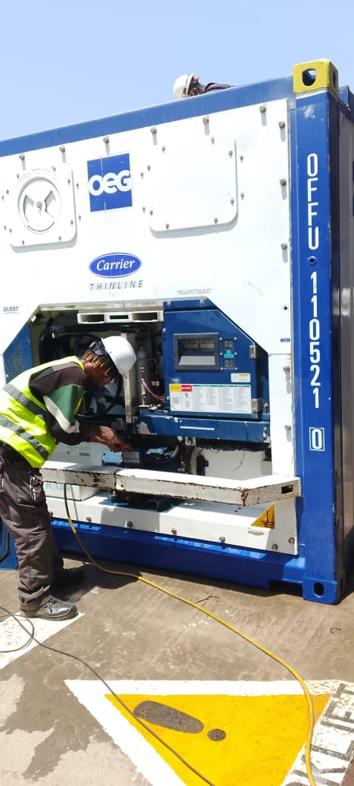
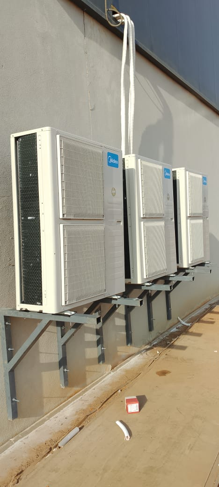
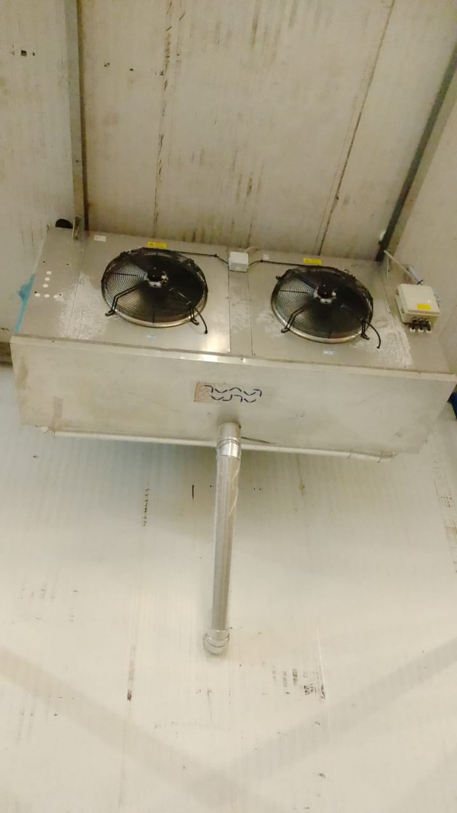
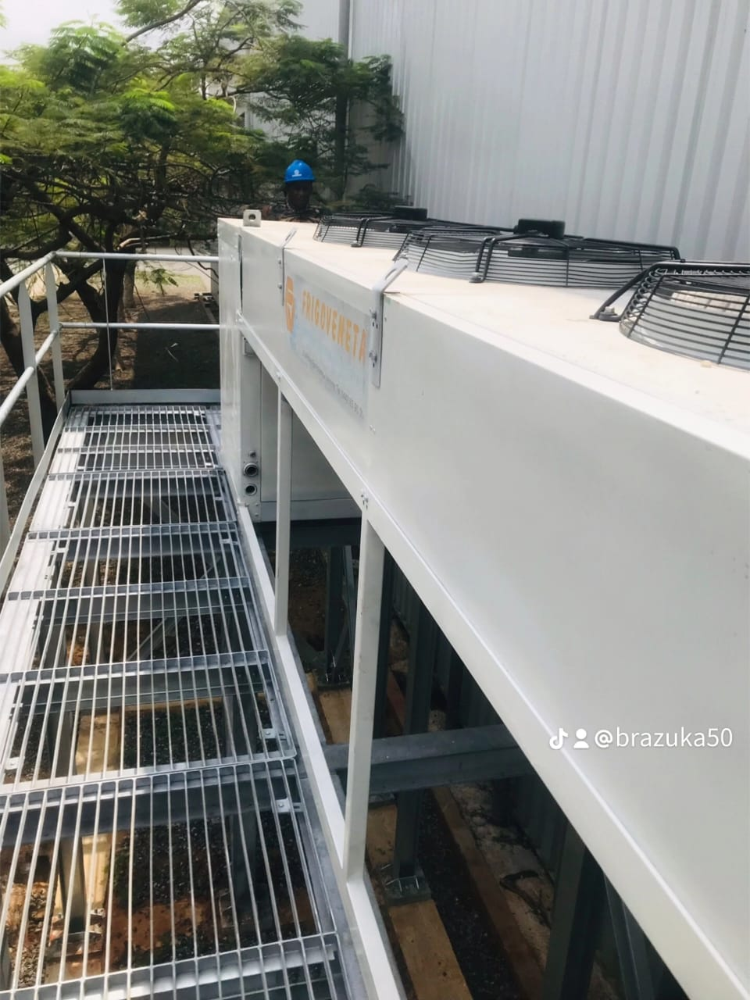
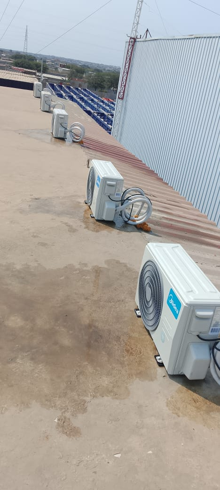
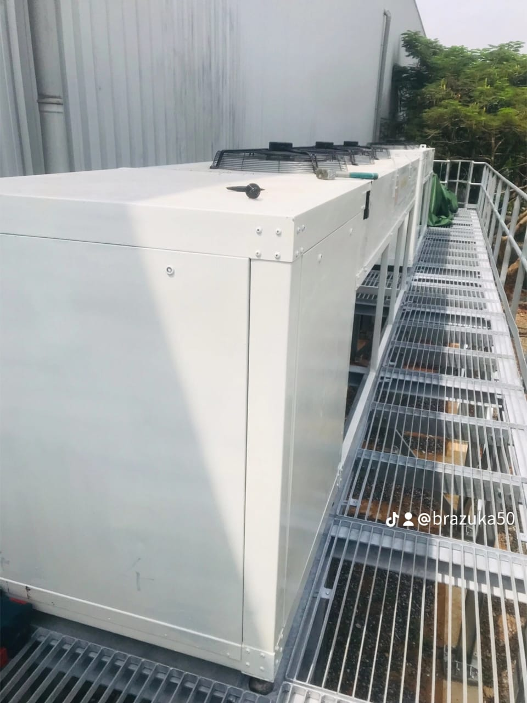

Nossos Trabalhos Reais em Luanda








📍 Luanda
Talatona, Kilamba, Viana, Zango, Maianga, Cazenga
Talatona, Kilamba, Viana, Zango, Maianga, Cazenga
📞 935 230 498
WhatsApp
📧 divaclimaservico@gmail.com
divaclimaservico@gmail.com
divaclimaservico@gmail.com
⏰ Horário
24h - Aberto 24h / 7 dias
Atendimento de Emergência
24h - Aberto 24h / 7 dias
Atendimento de Emergência